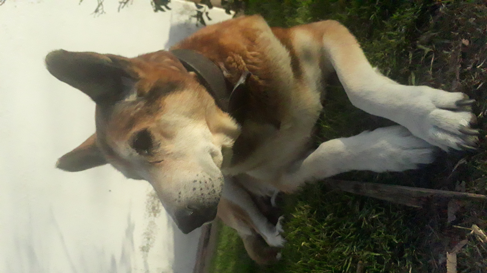
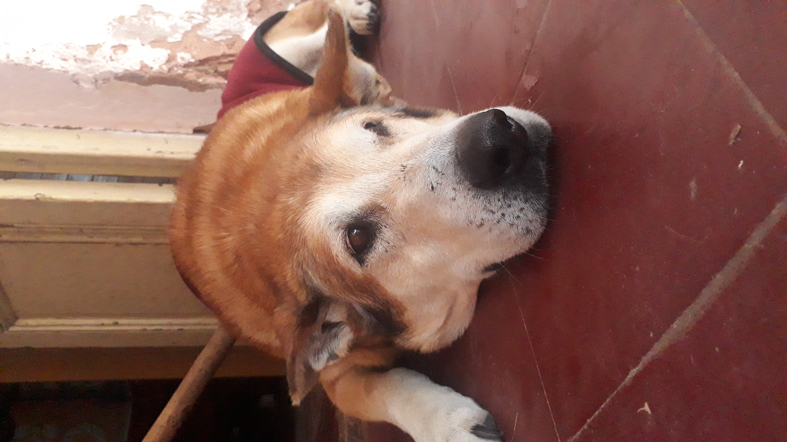
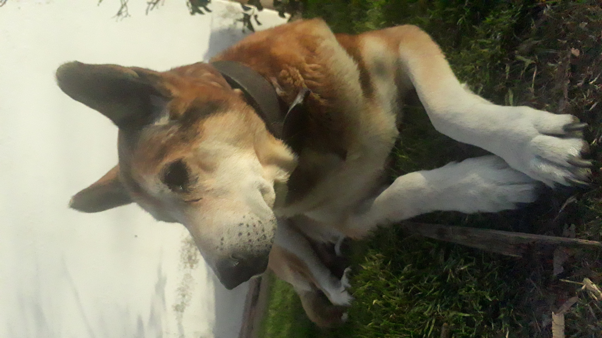
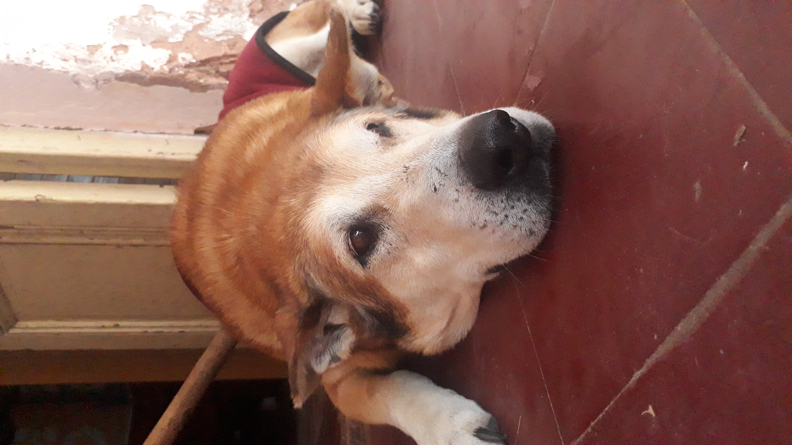
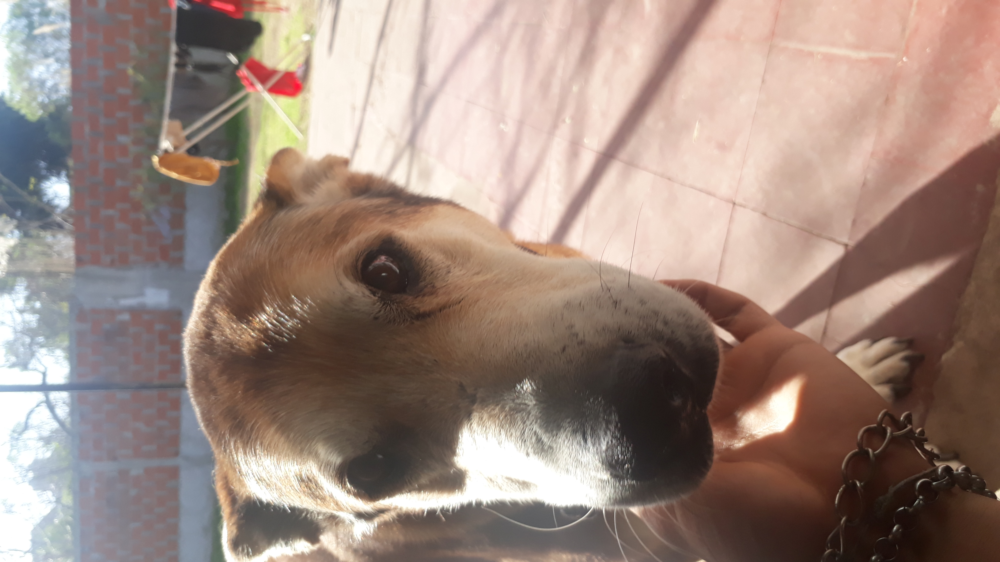
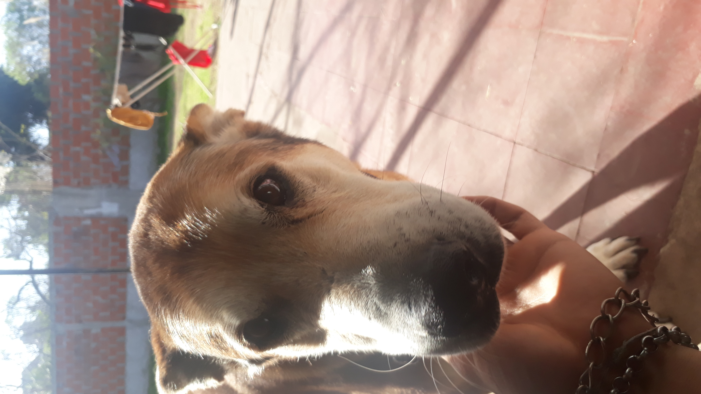

Roco
"El viejo cascarrabia"
 



 

"El viejo cascarrabia"
Roco llego a nosotros gracias a mi abuelo, en su momento el trabajaba en un estacionamiento y un dia lo vio a en ese momento un cachorrito que paseaba por la calle sin rumbo, el lo entro y lo tuvo con el porque le dio lastima de lo que le podia llegar a pasar, ahi comenzo todo. Luego no recuerdo si la jefa o una compañera de mi abuelo le dio el nombre, al tiempo comence a ir a verlo, jugaba con el y en su momento por como era pensaba que era un salchicha. Obviamente crecio y ya no lo podian tener en el estacionamiento por lo cual mi abuelo llamo a mi madre para preguntar si lo queria y asi es como llego a nosotros.
Roco siempre fue ese perro que le tenias miedo porque era muy energico y tenia apariencia de que si te acercabas demasiado podia llegar a morder. El era el que mandaba, los demas perros no lo molestaban, encima era malo el desgraciado, les robaba la comida a los otros era terrible. Tambien le gustaba escaparse, al principio solo y despues acompañado con el negro que fue su amigo inseparable aunque Roco volvia todo machucado y el Negro ni un rasguño, siempre nos imaginamos al Negro escondido atras de un arbol mientras Roco peleaba. En una de esas peleas una vez volvio rengo, la herida sano pero quedo rengo eso no le impedia seguir saliendo como si nada, de viejo tambien, ya no tanto como antes que se podia llegar a ir dias. De viejo descubrimos que era bastante jugueton gracias a que llego Cookie, el no le podia seguir el ritmo pero aun asi jugaba con ella.
Roco cuando ya se hizo mas mayor comenzo a desarrollar un tumor por la zona del abdomen, lo tuvo por varios años hasta que por mi iniciativa lo llevamos al veterinario, fue complicado ya que nunca lo habias llevado por lo cual tuve que enseñarle a usar un bozal primero por seguridad. La veterinaria lo reviso y nos mando a hacer los prequirurgicos, hicimos los distintos estudios, salieron lo suficientemente bien como para operarlo, le pudieron extraer el tumor y por su prostata que estaba muy agrandada tambien lo castraron ya con 12 años maso menos, el tumor era benigno por suerte.
Cuando lo llevamos a hacerle uno de esos estudios el doctor nos dijo que tenia apariencia de un pastor aleman, que podia llegar a tener alguna cruza dentro de sus genes, esto va a tener mas sentido ahora. En noviembre maso menos de 2022 comenzo a tener complicaciones, le costaba levantarse o caminar, en ese momento pense bueno la verdad ya esta, no es vida para un perro el no poder moverse por sus propios medios, por cual hable con un veterinario y tenia pensado hacerle la eutanasia pero mientras hacia el pozo en el fondo de mi casa donde lo iba a enterrar, el fue hasta donde estaba yo, eso para mi fue como el diciendome "todavia estoy aca desgraciado, no me mates", por lo cual decidi llevarlo a la misma veterinaria que lo opero para ver que se podia hacer para intentar mejorar su situacion, le receto unos corticoides, eso lo hizo mejorar, comenzo a caminar otra vez y hasta correr. Pero no era para siempre, a los meses volvio a tener los mismos problemas, lo lleve a una veterinaria distinta porque la otra estaba de licencia por maternidad, la primera vez lo lleve en mis brazos, eran 5 cuadras no eran muchas pero parecian infinitas, seguimos con el mismo tratamiento y comenzamos a hacerle acupuntar para intentar ayudarlo pero no hubo caso. Todos los dias habia que ayudarlo para levantarse, todos los dias amanecia con pis y caca, al final termine por llamar al veterinario y hacerle la eutanasia ya no podia seguir asi, el dia 22 de febrero de 2023 Roco fallece.